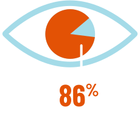

SCROLL
86% of patients experiencing dry
eye disease (DED) have excessive
tear evaporation due to MGD as
the root cause3
Excessive tear evaporation is a direct
consequence of MGD and a leading cause of
DED signs and symptoms.4
MGD=meibomian gland dysfunction.
EXAMINE THE CAUSES

Evaporation in DED is largely
unaddressed by current
treatments, and its burden on
society remains significant5-10
Associated with decreased quality of life and high
economic burden, DED is a modern-day disorder in
which digital lifestyle is a major contributor.10-12
Without addressing evaporation,
signs and symptoms of DED may
chronically persist13
Examining DED with a focus on evaporation reveals
a need to rethink current management approaches.